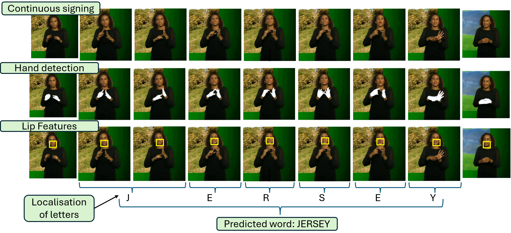
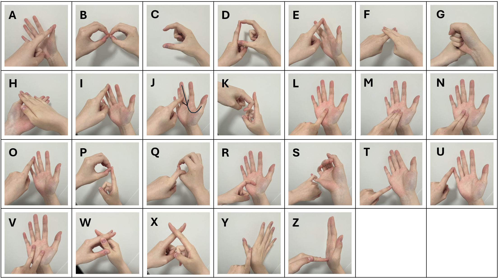
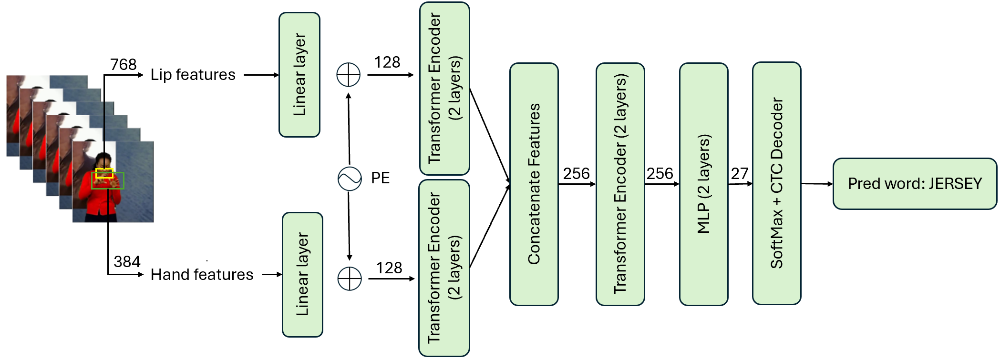
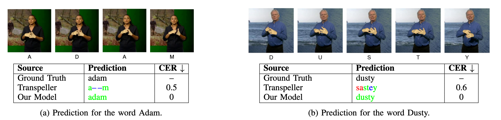

Abstract
Fingerspelling is a critical component of British Sign Language (BSL), used to spell proper names, technical terms, and words that lack established lexical signs. Fingerspelling recognition is challenging due to the rapid pace of signing and common letter omissions by native signers, while existing BSL fingerspelling datasets are either small in scale or temporally and letter-wise inaccurate. In this work, we introduce a new large-scale BSL fingerspelling dataset, FS23K, constructed using an iterative annotation framework. In addition, we propose a fingerspelling recognition model that explicitly accounts for bi-manual interactions and mouthing cues. As a result, with refined annotations, our approach halves the character error rate (CER) compared to the prior state of the art on fingerspelling recognition. These findings demonstrate the effectiveness of our method and highlight its potential to support future research in sign language understanding and scalable, automated annotation pipelines. The dataset, code, and trained models will be released upon acceptance.

BSL alphabet. Unlike many other sign languages, British Sign Language (BSL) employs bi-manual fingerspelling, which poses additional challenges for recognition due to frequent occlusions between the two hands.
Fingerspelling recognition network architecture. The model leverages two complementary feature modalities: lip features extracted using AUTO-AVSR and hand features obtained from HAMER. Each modality is first passed through an individual linear projection to align feature dimensions, followed by separate Transformer encoders. The encoded features are then concatenated and further processed by a Transformer encoder. Finally, a two-layer MLP predicts per-frame letter labels, which are also used as inputs to the CTC decoder. The dimensions are shown in the numbers beside the arrows. The 384 dimensional hand features cover the vector dimension for both hands.
Example correct fingerspelling predictions. Top: a subset of the video frames with corresponding letters. Bottom: full-word predictions from Transpeller and our model with character error rates (CER). Colours indicate correct letters (green), substitutions (red), and insertions/deletions (blue).Video
Supplementary Video
Citation
Recognising BSL Fingerspelling in Continuous Signing Sequencesn
Alyssa Chan*, Taein Kwon*, Andrew Zisserman
* Co-first authors
@InProceedings{
}
Team
| Alyssa Chan | Taein Kwon | Andrew Zisserman |